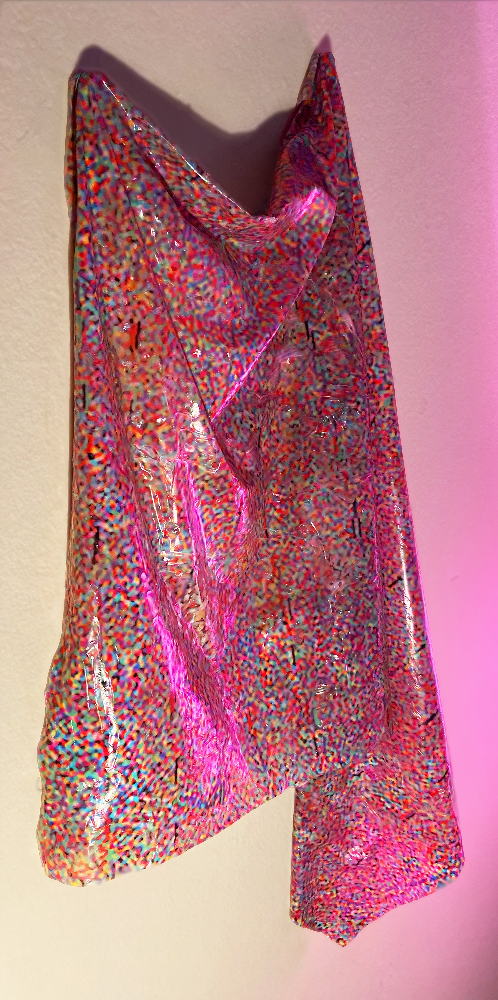
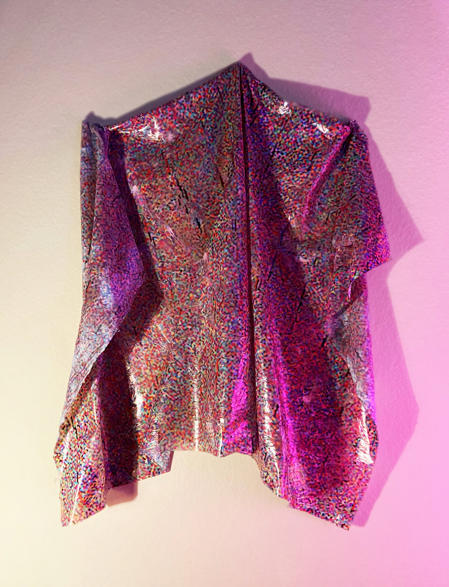
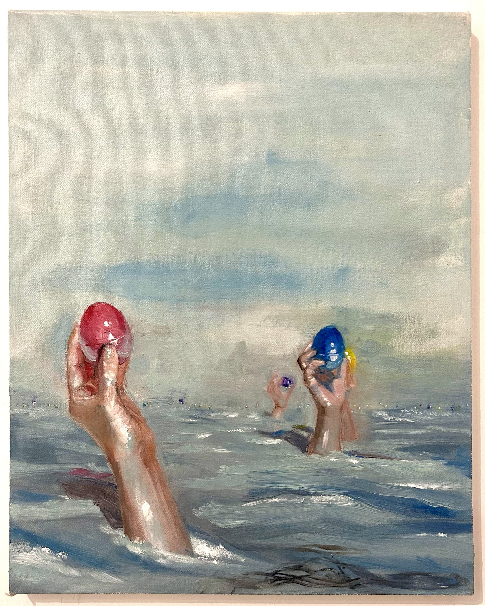
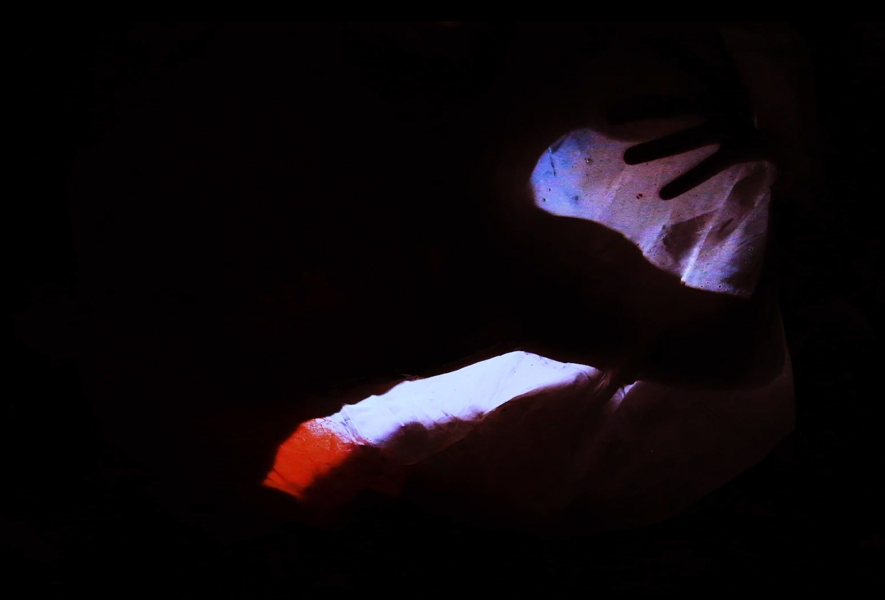
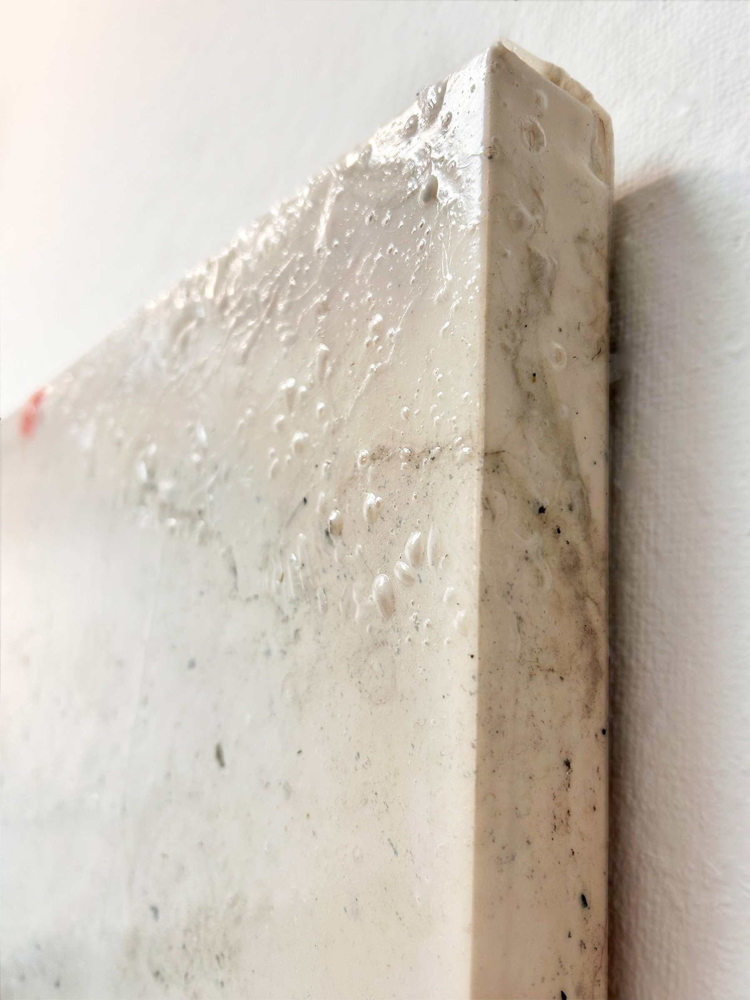
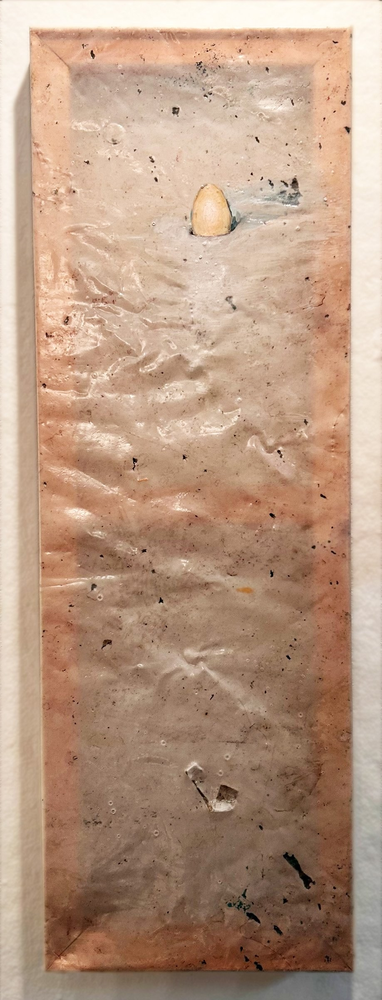
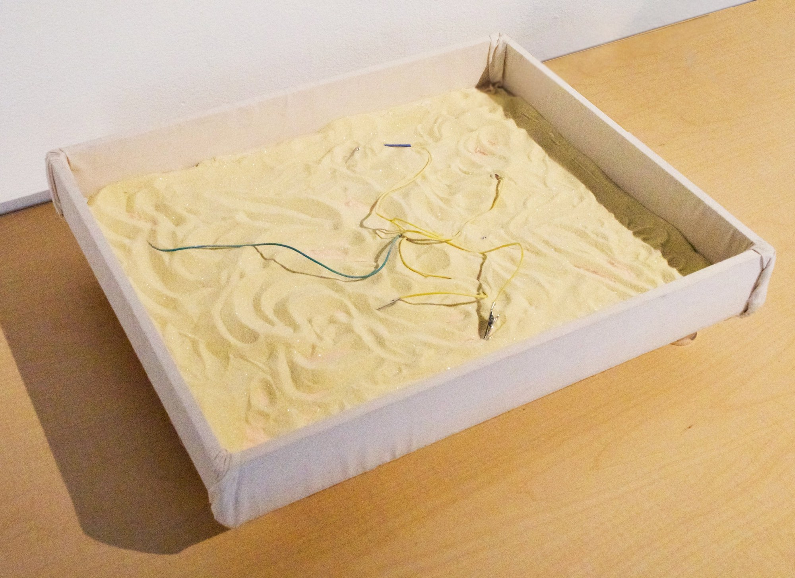

Painting and experimental material work.


A photo retrieved through audio manipulation is transferred onto dried PVA glue, creating a piece where sound and tactility converge. This work transforms sonic energy into a tangible representation, preserved in the image embedded within the glue’s surface. The piece was created by using Audacity in an unconventional way, saving a sound clip as an image. This process introduces an element of unpredictability, allowing the final result to capture the dynamic interplay between sound and visual form. This piece was created as a school project at home during the pandemic.
Faces Looking at You emerged after months of being confined indoors with only my partner for company during the Covid-19 pandemic. His face, so deeply familiar to me, could not be fully captured in a single, still image. This work seeks to embody the essence of cubism, presenting multiple perspectives within one composition to reflect the complexity and layers of our connection. This project was completed in a school setting.
This painting explores humanity’s “god complex” and its impact on the Earth. It addresses issues such as the depletion of the ozone layer, the threat of global warming on Atlantic Ocean circulation, and the role of technology in accelerating these effects. This project was completed as a school project at home during the pandemic.
This piece serves as an ode to the Egyptian creation story, the first land rising from the ocean, now mirrored in the reality of climate change, as rising seas reclaim the land. To create this work, it was imperative that the Benben be safely biodegradable in ocean water and have a short dissipation time. After experimenting with materials like cornstarch, rice paper, and rawhide, cast sugar emerged as the most elegant solution. This piece was created as a school project.

This painting series uses eggs as a vessel to visually describe the phenomenon of hypocrisy and the exaggerated beliefs politicians feign to gain voters, often at the expense of women’s autonomy. These works were created in a school setting.

During the pandemic, I experimented with pouring and lifting PVA glue from the ground. This video extends that material exploration, capturing the delicate interplay between glue and light. The disorienting cuts, shifting from pink light to fragmented glimpses of a woman’s body, evoke familiar narratives of entrapment. These abrupt transitions disrupt expectations, reframing the trope of constraint within a space of ambiguity and tension. Through fractured time and perspective, the piece reimagines captivity as something elusive, resisting straightforward interpretation. This piece was created as a school project at home during the pandemic.


These works explore the visual effects of translucent PVA lifted directly from my studio floor, investigating the liminal space between impermeability and porosity. The elastic, translucent surface of the glue evokes a boundary that both divides and connects. Meanwhile, the depiction of eggs as porous structures that support life amplifies this exploration. Together, these elements offer a meditation on the dynamic tension between containment and openness, reflecting the continuous flow and interconnectedness that define existence. This project was created in a school setting.
I created Pink Tornado as a playful celebration of my decision to apply for a degree in mathematics. It is a kitschy, self-aware artwork that explores the concept of being a ‘Woman in STEM’ and the challenges and stereotypes associated with that identity. The process involved attaching the canvas tornado to a power drill, which, when activated, sprayed wet paint and confetti across the diorama, creating a dynamic and forceful image. This piece was created as a school project at home during the pandemic.
Santa Fe River builds upon the concept of the Primordial Mound, with the presence of the Benbens serving as a subtle, ethereal reminder of ancient origins. The Santa Fe River, a place I often visited in Gainesville, Florida, is part of a rare biome rich in diverse wildlife, now increasingly threatened by climate change. The juxtaposition of the sharp, metallic depiction of an ancient symbol against the tranquil, swampy river scene imbues the work with an omniscient, timeless quality. I created work as a part of my own practice.
A Collection of Disjoint Sets transcends the traditional canvas by creating a modular painting that can remain whole or be split into separate pieces. The title reflects the idea that each section is its own ‘set’, if the universe is one large set, then each fragment represents its own universe. The central mirror connects the viewer to their own universe, positioning them in relation to the other fragments. Copper tape along the edges adds an ethereal glow, making the painting appear to float off the wall. This started as a school project and continued in my own practice.
Ceramic tiles modeled after Islamic girih tiles and arranged randomly.
Our team of five won the city beautification and pedestrian safety contest hosted by the City of West Palm Beach. We based our design on the concept of migration, as the intersection connects the train station to the city and serves as a vital route for people commuting to work and school. Our goal was to celebrate pedestrians while improving safety in the area. To achieve this, we chose dark colors for better visibility and to minimize sun bleaching over time. The design featured simple, bold shapes to allow for quick execution using large templates and the support of community volunteers. The project culminated in a public community event. As team leaders, we guided participants from diverse backgrounds in creating a mural that spanned the intersection. The city blocked off traffic, and together, we completed the mural in under two days.
This piece explores themes of isolation, transition, and the fragile boundary between life and absence. The yellow bar projects the barren image of an ultrasound onto the shore, creating a surreal, liminal space at the ocean’s edge. The stark contrast between the sharp, clinical imagery and the tranquil yet desolate shoreline evokes feelings of emptiness and disconnection. This work was created in a school setting.

This project is a working prototype for a sandbox that warms where the user touches, recreating the personalized, nostalgic warmth of a playground on a hot day within a sterile gallery setting. When a user’s skin makes contact with the bottom of the sandbox, a touch capacitor activates the corresponding heating pad via the Arduino. The heating pad warms the conductive sand in the surrounding area. The 12-volt heating pad is sufficiently warm to heat the sand while remaining cool enough to prevent burning participants. The next iteration will focus on accommodating more sand and minimizing visible wiring. This piece was created as a school project. Material Experimentation
Mind Thief is a tribute to survivors of sexual assault. This piece began as a community call for individuals who wanted their stories reflected in the work. Many came forward, sharing their experiences, which I wrote down by hand and then cut and collaged across the canvas. The painting aims to anonymously visualize the magnitude of pain, resilience, and the collective impact of these stories, creating a space for reflection and solidarity. This piece was created in my own practice.
Amelogenesis Imperfecta is a rare hereditary condition where the affected individual does not develop enamel, the white protective layer on the tooth. As a result, their teeth are often smaller, more yellow, and weaker than average. This condition is inherently painful and requires enduring treatment. This visceral image depicts my teeth after years of extensive tests, veneers, temporary crowns, lasers, and, finally, permanent crowns. This piece was created in my own practice.
Reaction Box was created in response to the challenge of sculpting with a sphere, a box, and a cone. The result is a dynamic, functional form that appears to be both melting and exploding simultaneously. This project was completed in a school setting.